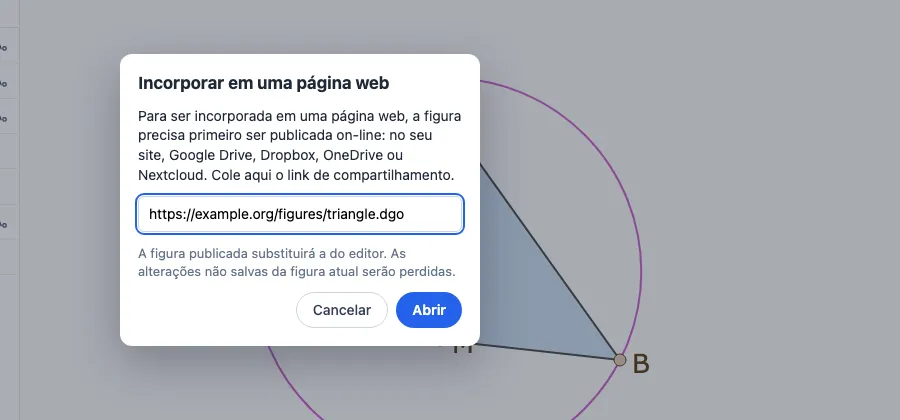
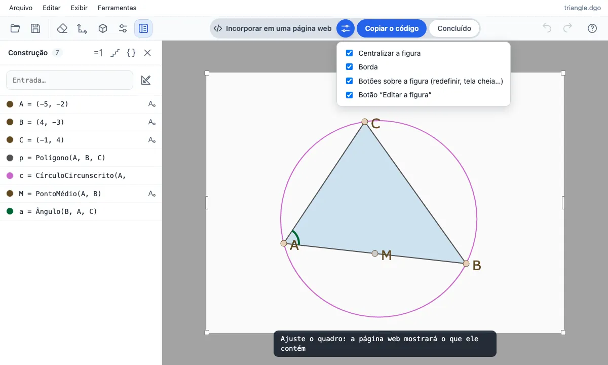

Incorporar em uma página web
Uma figura do DocGeo pode ser exibida em qualquer página web — seu site, um curso Moodle, um blog — e manipulada ali como no DocGeo. Basta colar no HTML da página um código que o editor prepara. A figura se adapta à largura da página, inclusive em um celular.
O princípio
A página não contém a figura: a cada exibição, ela a lê onde você a publicou on-line. Assim:
- a figura precisa primeiro ser colocada on-line, como para compartilhá-la por link;
- para atualizar a página, basta substituir o arquivo publicado: todas as páginas que a incorporam mostram na hora a nova versão, sem mexer no código delas.
Passo a passo
-
Salve a figura (Ctrl S) e coloque o
arquivo
.dgoon-line: no seu site, Google Drive, Dropbox, OneDrive ou Nextcloud. Copie o link de compartilhamento. -
Escolha
Arquivo › Incorporar em uma página web…. Se
a figura não foi aberta pelo seu link, o DocGeo o pede:
cole-o e clique em Abrir. A figura
publicada substitui então a do editor, o que garante que o
código vai funcionar.

- Um quadro aparece sobre a figura: a página mostrará exatamente o que ele contém. Suas alças (cantos e meios dos lados) o redimensionam, suas bordas e sua etiqueta o deslocam. Para enquadrar, você também pode dar zoom, mover a vista ou girar uma figura 3D; a figura continua manipulável.
-
Ajuste as opções se necessário, com o botão à esquerda de
Copiar o código.

- Clique em Copiar o código e cole esse código no HTML da sua página.
- Concluído ou Esc remove o quadro.
As opções
| Opção | Efeito |
|---|---|
| Centralizar a figura |
envolve o código em <center>:
a figura fica centralizada na página.
|
| Borda | uma linha cinza fina em volta da figura. |
| Botões sobre a figura | uma pequena barra no canto superior direito da figura, visível quando o mouse passa sobre ela: redefinir a figura, exibi-la em tela cheia. |
| Botão “Editar a figura” | acrescenta a essa barra um botão que abre a figura no editor, em uma nova aba. Desmarque-o, por exemplo, para que os alunos não vejam a construção. |
Todas as opções vêm marcadas; suas escolhas são mantidas até o editor ser fechado.
O código a colar
O código copiado se parece com isto:
<center><iframe
src="https://…/index.html?fit=704,512,…&url=https://…/triangle.dgo"
style="width:704px;max-width:100%;aspect-ratio:704/512;border:1px solid #ccc"
allow="fullscreen" loading="lazy"></iframe></center>
Para mudar o tamanho da figura na página, altere só
width, em pixels: a altura acompanha, e a figura
mantém as proporções do quadro. Em uma tela mais estreita, como
a de um celular, ela se reduz sozinha
(max-width:100%). Altere
aspect-ratio só para dar outra forma ao espaço da
figura, que continua inteira e centralizada nele. Os números
depois de fit= descrevem o que a figura mostra, não
seu tamanho: não os altere.
Cole o código onde a página aceita HTML: no próprio arquivo
.html, em um bloco “HTML personalizado” do
WordPress ou no modo HTML (código-fonte) do editor de texto do
Moodle.
Na página
A figura é manipulada ali como no DocGeo: pontos, controles deslizantes, caixas de seleção, botões… Arrastar em uma área vazia move a vista, ou a gira em 3D. A roda do mouse rola a página, como em qualquer lugar; para dar zoom na figura, use Ctrl + roda, ou faça o gesto de pinça no touchpad.
Os botões no canto superior direito redefinem a figura (como a página a abriu), a exibem em tela cheia e, se a opção estiver marcada, a abrem no editor.

Atualizar uma figura incorporada
Abra a figura no editor pelo seu link (por exemplo com o botão “Editar a figura” da página), altere-a e salve-a, e depois substitua o arquivo publicado no mesmo lugar, mantendo o link: no Google Drive, enviando uma nova versão do arquivo; no Dropbox, OneDrive ou Nextcloud, colocando o novo arquivo com o mesmo nome na mesma pasta. Todas as páginas que incorporam a figura mostram então a nova versão, sem mudar o código delas.
Para mudar só o enquadramento, escolha de novo Arquivo › Incorporar em uma página web… e copie o novo código: o arquivo publicado não precisa mudar.
Se a figura foi alterada no editor desde que foi aberta pelo seu link, o DocGeo avisa antes de mostrar o quadro: enquanto o arquivo publicado não for substituído, a página mostra a versão anterior.
Se a figura não aparecer
- O link precisa ser público: acesso “Qualquer pessoa com o link” no Google Drive, link sem senha no Nextcloud.
-
Algumas plataformas removem os
<iframe>do HTML colado, ou só os aceitam para certos sites ou certos usuários: verifique as configurações da sua. -
Um código copiado de um DocGeo instalado no seu computador
(endereço
localhost) só funciona nele: copie o código no editor on-line. -
O botão de tela cheia só aparece se o
<iframe>tiver o atributoallow="fullscreen", que o código copiado contém.